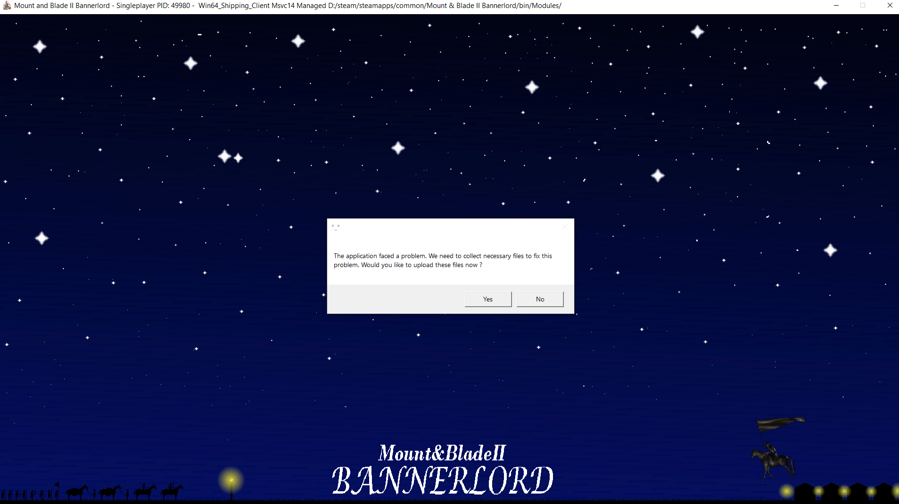
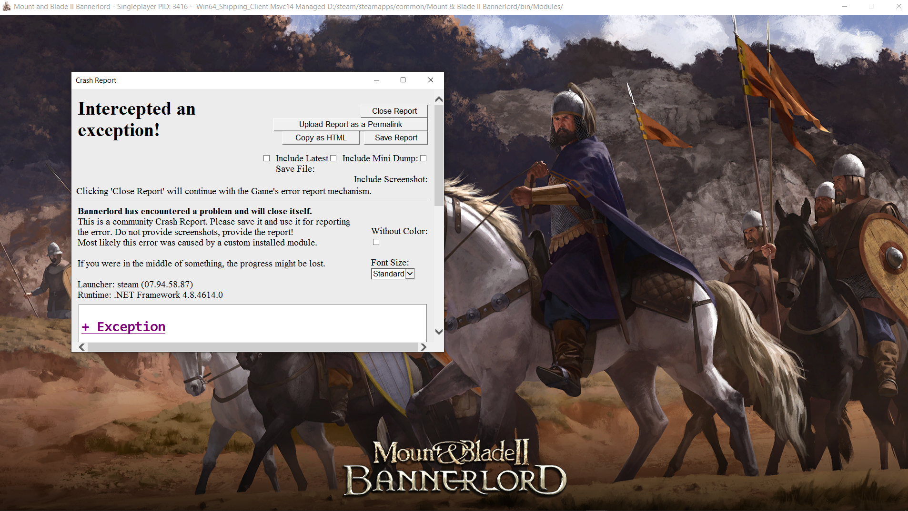
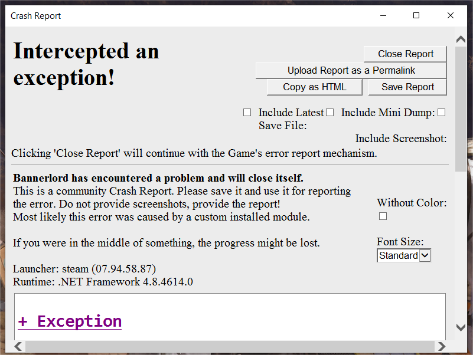
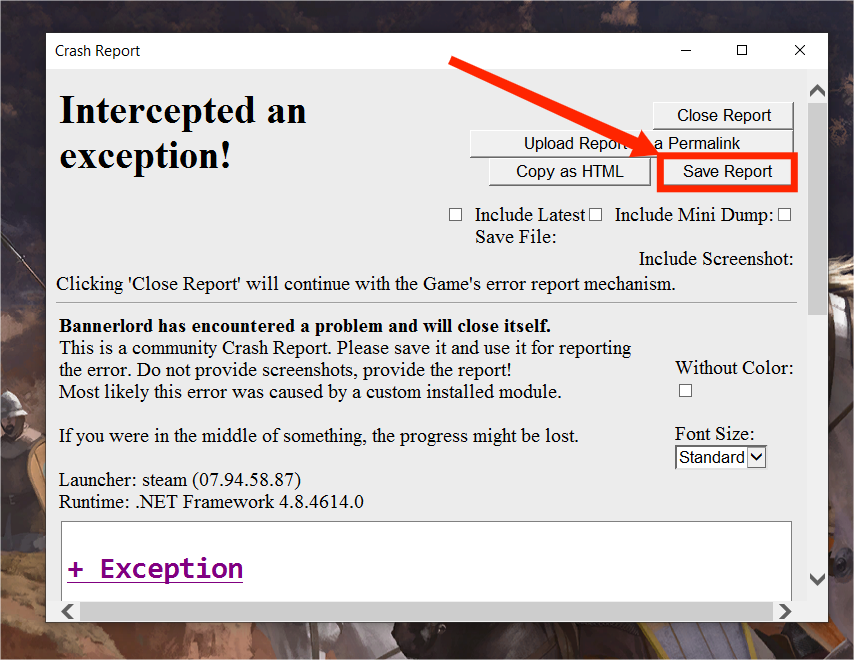
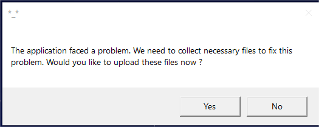
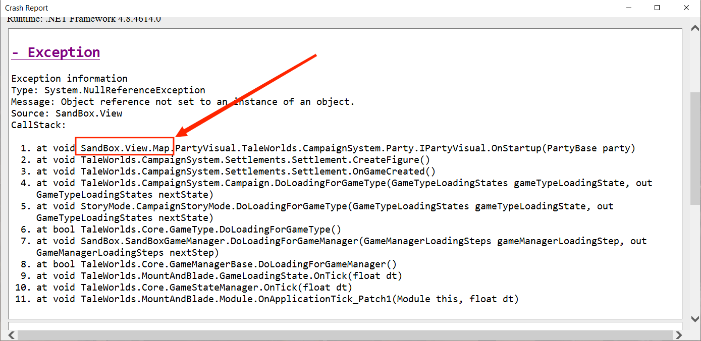
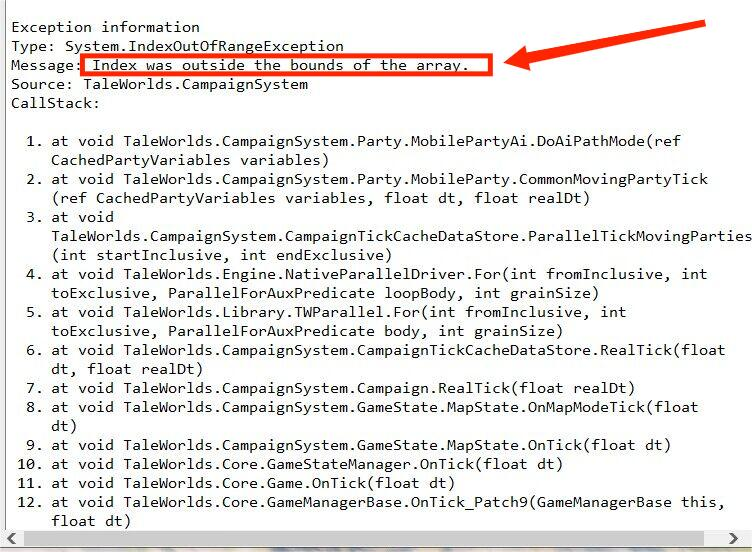
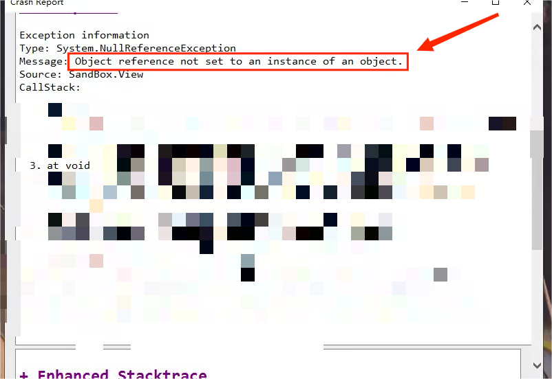

〇、纯萌新看这里（第一次玩mod）（双击蓝色字即可展开详情，再次单击即可收起详情。）
1、我第一次用电脑
问题描述：
首先欢迎你进入电脑的领域。
其次，请你先熟悉一下电脑的基本操作，如果你能看到这里，说明你已经掌握了一些基本的电脑知识，起码会进入一个网站。
然后，请看下面的问题。
解决方案：
无
2、我第一次玩骑砍2
问题描述：
首先欢迎进入骑砍的圈子。
其次，如果你是第一次玩这个游戏，建议先玩原版，而不是加一些mod，加mod是对于一些有经验的玩家的。
解决方案：
先玩原版熟悉游戏。
3、我已经玩过骑砍二的原版，但我是第一次玩骑砍二的mod。
问题描述：
很好，你现在已经对骑砍这款游戏有一定的熟悉程度，而且相信你对电脑也比较熟悉了。
你要玩mod，首先必须知道下面的一些常识：
①文件的压缩与解压：你必须知道压缩与解压是什么意思。压缩文件通常有三种，分别是zip、7z、rar。你能百度搜索360压缩下载解压工具。
②文件的复制、粘贴与替换：你必须知道这三个基本操作，不知道的话请百度。
③文件路径：你必须知道“文件路径”是什么意思，不知道请百度。
解决方案：
下面将详细讲解mod的安装过程，如果你是萌新，请务必认真看。
①你从百度云下载所有文件之后，在文件夹里找到“主地图文件”，右键将其解压，将里面的名为“Main_map”的文件夹复制，然后找到这个路径\steam\steamapps\common\Mount&BladeIIBannerlord\Modules\SandBox\SceneObj下的“Main_map”文件夹，将其删掉，然后右键点击粘贴，将刚才复制的“Main_map”文件夹粘贴进去就行了；
②找到XXexpand3.7z这个压缩包，右键解压，然后将XXexpand3整体复制到这个路径下\steam\steamapps\common\Mount&BladeIIBannerlord\Modules
③点击启动游戏，在mod勾选界面勾选四前置和XXexpand3.2.0并启动游戏即可，启动之后有其他弹窗就点“confirm”或者“是”。
一、mod安装系列问题:
1、进不去游戏
问题描述：
首先，搞清楚你是进不去游戏！！！不是其他的情况，是进不去游戏！！！是无法加载到游戏的主菜单，是在进游戏加载界面的时候弹出小白框。如下图：

解决方案：
①可能是你没安装前置mod造成的：请在中文站搜索“前置”然后按照里面的教程安装前置mod，请注意前置版本、mod版本、游戏版本三者必须保持一致；点击
前往中文站前置mod页面。
②可能是你前置mod版本不对造成的：按照①里面的方法安装和游戏配套的前置mod；
③加载了其他mod造成的：如果其他mod本身有问题也会导致进不去游戏，请去掉其他mod再次尝试；
④游戏本体问题：如果上面的方法都尝试过了还是进不去，请试试在steam里面验证游戏完整性，或者重新安装游戏。
2、新建战役或者沙盒模式报错
问题描述：
首先，搞清楚你是在新建战役的时候报的错！！！不是在进入游戏存档之后的报错！！！是点击主菜单的新建战役或者是沙盒模式之后，在选择开始文化之前就报错的。如下图：

解决方案：
①你的地图没按照要求替换：将你下载的mod文件夹中的主地图文件解压后，将里面的名为“Main_map”的文件夹复制，然后找到这个路径\steam\steamapps\common\Mount&BladeIIBannerlord\Modules\SandBox\SceneObj下的“Main_map”文件夹，将其删掉，然后右键点击粘贴，将刚才复制的“Main_map”文件夹粘贴进去就行了；
②你的其他mod的原因导致的：请取消勾选其他mod并再次尝试；
3、在mod安装方面的其他问题
问题描述：
如果1、2两个问题都没有帮助你解决问题，那么你就大胆的在Q群里提问，中文站和mod文件里面都有群号。注意提问之前请确保你已经仔细阅读上面的两个问题并且按照解决方案还是没有成功进入游戏。
如果你觉得这个问题会很难解决，并且一定与星星扩展mod有关，那么请给我发消息，我会帮你解决。但是如果你安装了其他mod出现问题还来找我，那就别怪我不理你了。
解决方案：
无
二、正常游戏中报错的系列问题:
1、你不止加了星星扩展一个mod且出现报错。
问题描述：
如果你除了四前置mod和星星扩展之外，还加了其他mod，请按照这个问题的解决方案来解决。

解决方案：
①首先你可以尝试点击崩溃报告中的“Attempt to continue”或者“close report”，如果还出现就一直点，某一些错误通过点击这个也能解决。
②然后尝试只加星星扩展mod，但是注意不要再中途增减mod，这很容易造成坏档或者报错！！增减mod最好开新档。
③重新进入游戏看是否在同一时间、同一地点或者同一事件中报错，很多时候不会出现这种情况，如果出现，请看下面的说明。
最后，我想说的是，加了多mod这种情况我不会帮你解决，你加了多个mod，我不能判断是不是星星扩展的问题。如果上述方法不能帮你解决，请自己按照第三点“常见报错分析”解决。
如果你自己解决不了，而且真的特别特别需要解决，或者真的觉得这一定是星星扩展的问题，请将保存崩溃报告(保存方法请看下面的问题2)单独发给我并详细描述报错的时间与游戏中的各种状态等。对于那种直接问“我游戏报错了怎么办？”而不说清楚报错详情的我会直接踢出群并拉黑。
当然问我之前最好是先问群友。
2、你只加了一个星星扩展并在游戏中报错了（有崩溃报错的弹窗）。
问题描述：
如果你只加了四前置mod和星星扩展，在游戏中报错了并且出现下图类似的弹窗报告，请尝试下面的解决方案。
下面的保存崩溃报告的方法：

解决方案：
①重新进入游戏看是否在同一时间、同一地点或者同一事件中报错，很多时候不会出现这种情况，如果出现，请看下面的解决方案。
②根据第三部分“常见报错分析”尝试自行解决。
③如果解决不了就问群友或者保存崩溃报告发给我，并且详述报错的时间和游戏中的事件等，比如在某个城镇报错，比如和某个人对话就报错，再比如和一个部队开战就报错等等，必须说清楚情况！！
3、你只加了一个星星扩展并在游戏中报错了（无崩溃报错的弹窗）。
问题描述：
如果你只加了一个星星扩展并在游戏中报错了，且没有弹出崩溃报告，请尝试下面的解决方案
没有崩溃报告的弹窗是这样的：

解决方案：
①重新进入游戏看是否在同一时间、同一地点或者同一事件中报错，很多时候不会出现这种情况，如果出现，请看下面的解决方案。
②如果总是出现在同一个地方报错，请将具体情况反馈给我，注意一定要描述清楚。比如在某个城镇报错，比如和某个人对话就报错，再比如和一个部队开战就报错等等，必须说清楚情况！！
三、常见报错分析:
1、SandBox.Veiw.Map。
问题描述：
当你点开崩溃报告中的“Exception”或者“CallStacks”发现了SandBox.Veiw.Map的字样，那么99%就是地图问题。

解决方案：
①按照要求重新替换地图。如果你之前复制错地方了，请在steam里面验证游戏完整性或者重装游戏后再次按要求替换mod的地图文件。
2、Index was outside the bounds of the array。
问题描述：
当你点开崩溃报告中的“Exception”或者“CallStacks”发现了Index was outside the bounds of the
arrayp的字样，这是数组索引越界的报错，这个问题很常见，很多原因都可能导致这个报错。

解决方案：
①尝试重启之后不要做和之前相同的事件可能可以解决。
3、0bject reference not set to an instance of an object。
问题描述：
当你点开崩溃报告中的“Exception”或者“CallStacks”发现了0bject reference not set to an instance of an
object的字样，这是个错误有多种说法如：调用的对象为空、调用对象未实例化、空指针等，这个问题也很常见，很多原因都可能导致这个报错。

解决方案：
①尝试重启之后不要做和之前相同的事件可能可以解决。
四、星星扩展mod中的bug:
1、地图bug。
问题描述：
所有的地图bug我都清楚，你不用再给我单独报告，地图的bug很多并不影响正常游戏，而编辑地图是一件很恼火的事情，如果你一直给我报告地图bug会导致我出现崩溃的情况。所以地图bug能忍就忍，我不会经常去修地图bug，我需要把时间给其他更重要的问题。
解决方案：
无。
2、剧情bug。
问题描述：
当前的剧情bug几乎不会影响正常招募12个特殊英雄，如果你发现某处的剧情有严重漏洞导致某个英雄无法招募，请一定报告给我。但是！！但是一定是真正的漏洞而不是你自己没搞清楚招募的方法。
解决方案：
这个问题几乎不会出现，如果出现，请敲敲自己的脑瓜！！可恶！
3、功能bug。
问题描述：
功能bug是比较容易出现的，我只能说我尽力去修复那些功能上的bug，但是我真的想说，这类功能性的代码都是作者自己的一点点摸索的，官方根本就没有可以参考的文档，有时候我测试一个功能要测试好几天，而且最后还不一定能成功，所以如果你发现非常重要的功能性的漏洞，请报告给我，如果不是特别影响游戏的正常玩的话，请忍一忍，因为这类bug要么我已经知道，要么是没办法修或者很难修的，所以请节约一下作者的精力，这个对持续更新mod很重要。
解决方案：
无。
4、设定bug。
问题描述：
这类bug是指：
①兵种类型设置错误，如弓箭手设置成了步兵；。
②兵种强度严重不合理，某个兵种强度严重不符合实情，这种情况大概率是bug而不是我故意那么设置的。
③装备属性严重不合理，同上。少数是特殊设定，如果不清楚建议问群友或者看本页面的其他攻略。
④领主获得第纳尔或经验过多而影响正常游戏，可以问群友或者报告给我。
......
报告这类型的错误前请一定确认是bug而不是有意设定的，想确认是否是有意设定请先问群友。
解决方案：
无。
五、星星扩展mod中特殊NPC攻略（实时更新中）:
1、女侠-风休住。
简介：
曾是拉盖娅的一个女兵。玩家获得的第一个英雄，战力大概能单挑60劫匪。
技能1、给玩家加血（每局的加血触发的最低血量是取10-30的随机数，比如如果随机数是10，则本局血量如果在在5-10之间就会给玩家加血。）。被动技能
技能2、招募遇到的劫匪（要求数量比玩家部队士兵数量要少才能够直接招募）。主动技能
技能3、每三天招募“女侠”这种士兵自动入队。可与她对话关闭此功能。
装备特性：斗笠不能更换。（就叫斗笠，星星商店有卖。）
招募：
去帝国酒馆找她对话，前四句对话完毕之后再此点击即可。时间到了之后再去找她即可招募入队。一定要去酒馆找她，不要在外面的部队找她。她任何时候都会出现在酒馆。另外，酒馆有很多新NPC，特别是波罗斯，你最好多看看。
2、果农-信无书。
简介：
西帝国的一个农民，具有非凡的军事才能，玩家前期能够获得的一个英雄。
技能1、自动寻找食物（游戏中每30小时寻找一次，寻找的食物为新添加的各类食物）。被动技能
技能2、遭遇站中如果我方处于弱势能够有机会不损失士兵下撤退。主动技能
技能3、能够将主部队15范围内的强盗类型部队增加人数。增加的多少为：(30~300)*部队士兵种类数，十天柯使用一次。主动技能
技能4、防止敌方部队撤退(4月29日更新的有小bug)。主动技能
装备特性：无。
招募：
找女侠对话获取线索，然后去村中找他，按要求执行即可。
3、医师-雨亦奇。
简介：
阿耳戈隆的一位医生，心地善良，经常为百姓和士兵治病，但为人低调。
技能1、治疗玩家和同伴，治疗的血量随着治疗次数增加而增加，治疗需要消耗纱布和药物。主动技能
技能2、需要送她书本才能够快速提升她的医术技能。
装备特性：无。
招募：
找女侠对话获取线索，然后去城中找他，按要求执行即可。（注意：可能不止一个长得像她的人。她是红头发，名字为“帝国女镇民”），纱布和药物在每个城镇中的酒馆里面可找药店老板购买。给完纱布和药品之后出城等待三天即可。
4、公主-索菲娅。
简介：
瓦兰迪亚一个城中的公主，据说已经死了一年多了，这会是真的吗？
技能1、加快俘虏招募。注意这会消耗额外的谷物，请确保队伍里面有足够的谷物（大于俘虏数量）才能够有效的加快俘虏招募速度。被动技能
技能2、复活一个特殊NPC。主动技能
技能3、和顾成单独再一个部队时能够招募亡灵士兵。被动技能
装备特性：斗篷不能更换。（斗篷名叫索菲娅的等待。星星商店有卖）
招募：
找信无书对话获取线索，城中百姓一共有5中不同的回答，守卫、男镇民、女镇民、小孩、乞丐。另外“仲春三五日”是指春天15日。因为游戏中春天只有一个月，所以仲春也就是指春天这个月。三五日的话，如果你知道年方二八是指16岁，那为什么会怀疑三五日不是指15日呢？因为从前面的对话能够明显看出是以古汉语的形式来说的，那么这里也需要用古汉语的形式来推测。
5、匠神-赫淮斯托斯。
简介：
斯特吉亚的一位铁匠，斯特吉亚士兵使用的许多强力武器均出自于他之手。
技能1、提升部队里面的金属锭等级，每天每个类型限制一个，只有匠神在部队才会生效。被动技能
技能2、匠神之锤：其他英雄和玩家拿着匠神之锤会自动将血量降低为1。
装备特性：匠神之锤换了对他自己没影响。
招募：
找军师对话获取线索。最后给钱的数量不同除了增加的魅力值不同没有其他任何区别。
6、马背少年-原荣。
简介：
库赛特一个为做马匹生意的老板打工的少年，其实他也早就厌烦了他的工作。
技能1、每隔一段时间随机找到马匹加入玩家的背包。马匹中不会包括赤兔和伯乐之魂。被动技能
技能2、战场唤马：能将一个马快速传送到玩家身边。主动技能
装备特性：他的马不能换掉。（马名为伯乐之魂，星星商点有卖。）
招募：
找医生对话获取线索。找到酒馆中的“妇女”对话，找原野时你应该相信村民索所说的话，他确实死了。找原荣时可以在某一个城蹲点，随机到这个城的时候在城中马贩的旁边能找到他。注意有的城没马贩，还有注意他提供的小女孩的线索。（拉齐赫酒馆的小女孩）
阿斯凯尔马获取途径：阿塞莱的阿斯凯尔城，或者打阿蒙神，阿蒙神骑的就是阿斯凯尔马。
格林托尔矮种马获取途径：巴丹尼亚境内购买。
斯特吉亚原生马获取途径：除了斯特吉亚，其他城中也可能出现。
瓦朗比骏马获取途径：瓦兰迪亚城中购买。
风暴军马获取途径：酒馆里的星星商人或者波罗斯。
沙漠战马获取途径：酒馆里的星星商人或者波罗斯。
7、阳光少女-秦山月。
简介：
阿塞莱一个城中的酒馆老板的义女，身世不得而知。
技能1、帮助其他特殊英雄。主动技能
技能2、超过18岁不会再长大。被动技能
装备特性：她的弩不能换掉。（名为山木核桃弩，在星星商店或其他城镇有卖。）
招募：
找到她后按照提示即可。注意看对话内容！！街道小女孩父亲任务之后，找西卡斯家族任意一个人对话都行。
8、舞女-柯凌。
简介：
瓦兰迪亚酒馆中的一个舞女
技能1、制作花瓣。被动技能
技能2、招募花仙子。被动技能
技能3、送给男领主＋50好感。主动技能
技能4、玉玉特性：玉玉低于80%可通过小月给她送花。大于80%不能再被送花。玉玉值春每天+1，夏每天+2，秋每天-1，冬每天-2。玉玉值多少需要通过小月查看。
装备特性：她头上的花瓣不能换掉。（名为柯凌的花瓣，买不到，需要等春天自己制作）
招募：
根据公主提示即可。给钱之后在城镇等待一天。
9、竞技大师-布恩。
简介：
一个巴旦尼亚的竞技场主，但同时也是一位剑术高手，并且人脉广泛。
技能1、招募贵族兵，招募花费随着招募次数的增加而逐渐减少。主动技能
技能2、提升士兵经验，需要送特定的书籍才能提升增加经验的数量。被动技能
技能3、和赛特协同作战。主动技能
装备特性：他的双手剑不能更换。（名为至高王之魂，在星星商店有卖。）
招募：
根据匠神提示即可。要打的藏身处为10处，侦查技能高更容易发现藏身处。
10、强盗首领-赛特。
简介：
阿塞莱南部沙漠中的一个强盗首领，是竞技大师的旧相识。
技能1、单独带队时招募哈拉米和阿蒙神进入队伍。商队也有效。被动技能
技能2、赛特行刑斧，这把斧头玩家拿着且不骑马时有特殊效果。被动技能
技能3、赛特战甲：赛特的神装，能在星星商人处买到，有了它的赛特将免疫近战。被动技能
技能4、和竞技大师布恩协同作战，前提是穿了赛特战甲且都没骑马。被动技能
装备特性：他的双手斧不能更换。（双手斧叫赛特行刑斧，商店没有）。赛特战甲除了他之外，其他人穿着没效果。
招募：
根据竞技大师布恩提示即可。在阿塞莱南部沙漠你会发现不一样的强盗，击败他们！
11、铁血总督-顾成。
简介：
西帝国的一位将军，具有非凡的管理才能。
技能1、督管城镇时每周提升民兵，并且提升民兵上限到3000，每周增加粮食和治安。被动技能
技能2、单独带队时可将公主加入他的队伍，此二人同时带队会有特殊效果（队伍名字会不一样，队伍每天增加两个亡灵士兵）。被动技能
装备特性：无。
招募：
找他本人对话根据提示即可。
12、时光使者-茱莉亚。
简介：
时光之城酒馆中一个身穿奇装异服的少女，没人知道她来自哪里，或许这个城镇的名称也与她有关。
技能1、咖啡，用于降低英雄的年龄，副作用是增加茱莉亚自身的年龄，比例为5:1。主动技能
技能2、城镇之间传送。主动技能
技能3、统计玩家参加过战役的数量、击杀人数、最常用的武器等。被动技能，从开档就已经在计算了。
装备特性：无。
招募：
找他本人对话根据提示即可。
13、王凯莉。
简介：
时光之城附属村庄里面一个戴斗笠，背着草叉的人。
要回答的问题答案：（以下问题可能会因为mod版本不同而问题的顺序或者多少有所不同，选择对应问题合适的答案即可。）
1、缨是黑色；
2、花瓣5色；
3、被一个冒充斯特吉亚的瓦兰迪亚士兵所伤。；
4、原荣一共需要47匹；
5、顾成的父亲名称是顾国；
6、信无书让你购买粮食的原因是为了村民；
7、真正的雨亦奇和她的画像的关系是：画像上画的是她，但是是伪装前的她。；
8、招募信无书需要提供的谷物数量为200；
9、关于赛特的爪牙描述正确的是：队伍中通常包含许多阿蒙神和阿塞莱弓箭大师；
10、雨亦奇让骗你去奥多赫找她的原因可能是：她只是故意支开你，实际上她根本没去过奥多赫。或她曾经去过奥多赫，所以想故意支开你。；
11、索菲娅需要什么时候去找她才可以招募入队：春季15日的夜晚。；
12、茱莉亚的传送阵最多标记2处城镇；
招募：
能招募，但是你必须有一样东西才行。
14、林柊。
简介：
帕巴斯坦村的一个老妇人，她或许知道原野的下落。
招募：
对话即可招募
15、三山去。
简介：
如果玩家没和风休住结婚，且玩家已经和其他人结婚，风休住就会自己找对象。
招募：
条件符合自动入队
六、星星扩展mod中兵种攻略:
1、八个国家的亲卫。
简介：
八个国家的第一任皇帝的亲卫，名称都带有这个皇帝的名字。这类兵种只会出现在对应的皇帝的部队中，如果这个皇帝去世，那这个兵种将再也不会出现。
招募：
只能通过俘虏的方式招募。
2、瓦兰迪亚隐士。
简介：
山贼或绿林强盗的野外部队或者藏身处会刷新瓦兰迪亚学者。
招募：
只能通过俘虏的方式招募。
3、力神步兵。
简介：
在各个国家的领主部队中会刷新少量，在神秘人部队中也有极低的概率刷新。神秘人刷新后可使用军师的打草惊蛇技能来增加数量。
招募：
只能通过俘虏的方式招募。
4、花仙子。
简介：
由特殊NPC中的柯凌在春天招募，如果柯凌在队伍，花仙子必须单次承受200以上伤害才会倒下（这个效果最多持续20分钟）。花仙子是非常强力的弓箭手。
招募：
只能通过柯凌招募，数量有限，不会在神秘人刷新。
5、斯特吉亚火炮大师。
简介：
斯特吉亚的六级兵中的一个分支，火炮大师有友军伤害，用得好很厉害，用不好会总是杀自己人。
招募：
斯特吉亚贵族兵升级得到。
6、荒野精灵。
简介：
酒馆中的流落少女升级而来的，强力的弓骑。
招募：
通过酒馆的流落少女招募而得到。
7、九纹龙。
简介：
以长棍为武器的少年，战力不俗。
招募：
俘虏流民小孩升级而来。
8、扑天雕、没羽箭、涅雷采斯禁卫军、舞女、丛林飞刀女。
简介：
雇佣兵，战力不俗
招募：
在酒馆招募雇佣兵或者俘虏小阵营的部队。
9、军中女侠。
简介：
女侠-风休住招募的士兵升级而来，战力普通，但前期能够免费获得的骑兵。
招募：
风休住招募入队，可通过对话禁用此功能。
七、星星扩展mod中物品攻略:
1、王凯莉的信。
简介：
信的内容是：朋友你好！我叫王凯莉，是这个mod的作者，也是风休住的朋友，你或许现在还不知道风休住是谁，但你应该会很快知道的。很高兴你下载这个mod，接下来我将会对这个mod做一个简要的介绍。这个mod增加了一些新的装备和物品，新的兵种和伙伴，还增加了军营，以供将士们休息之用，还新增了一些特殊机制，这里我不过多赘述了，如果想了解更多内容，你可以在你下载此mod的地方找到更多信息。我知道你已经迫不及待的想要我赶快结束这封信，但是我不得不提的是，我们朋友们，你也会很快认识他们，他们将会给你带来真正巨大的帮助，但是他们并不会轻易的加入你的部队，就好像天上的星星，需要很高很高的梯子才能够爬上去摘到，你也需要付出一定的耐心与时间才能够获得他们的信任。最后，我其实并不是很擅长写信，感谢你能够花时间看完它，你可以将这封信卖掉作为你的第一笔资金，也可以将它留下以备不时之需，但是这封信将不会影响后面的剧情，你不必为此担心。最后的最后，我已经告诉我的朋友风休住将会有人来找她，她就在酒馆里面，但是她也有自己的事情需要忙，我不确定她什么时候才能够加入你的部队。好了，开始你的旅程吧，我的朋友！哦，还有一件事，有发现bug记得回信给我哦，我的邮箱d_22664434@outlook.com。
获得：
开新档的第二天自动获得。
2、书籍。
简介：
大部分书籍玩家不能使用，只能作为商品，有6本书是用来送给医生和竞技大师的，这6本书能在酒馆的星星商人那里买到。
获得：
酒馆的星星商人处购买。
3、特殊武器与马匹。
简介：
这些物品大多能在星星商人处买到，价格太高的不建议购买。
获得：
酒馆的星星商人处购买。
4、赛特战甲与赛特行刑斧。
简介：
赛特的专属战甲与赛特的专属武器。前者可在星星商人处买到，后者买不到，且是赛特自带的武器。赛特行刑斧玩家可以使用，且由特殊技能。如果赛特单独带队且没有参与玩家的战斗，玩家换了他的武器将不会有任何影响。
获得：
略
八、星星扩展mod中大地图部队攻略:
1、赛特的爪牙。
简介：
和竞技大师获得赛特的线索后会在阿塞莱境内刷新赛特的爪牙的部队，部队刷新出来之后会随着时间增加人数，如果玩家实力较弱，建议寻找人数较少的部队攻击。
刷新：
地图南部区域，与竞技大师获得赛特的线索之后才刷新。
2、神秘人。
简介：
单人部队，在开档7天之后会有概率出现所有新添加的士兵，包括力神，但是不包括花仙子。
刷新：
地图所有位置，新档开档7天后才会随机生成其他部队。
九、更新日志:
4月13日。
内容：
4月15日。
内容：
4月20日。
内容：
4月22日。
内容：
4月28日。
内容：
5月7日。（最后一次更新）
内容：